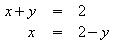

Wie kann ich meine Gleichungen entlang des "="-Zeichens ausrichten?
Im Moment unterstützt Formel keine Funktionen um Ausrichtungen zu machen. Aber man kann stattdessen eine Matrix machen.
Zum Beispiel wollen sie folgende Gleichungen anschreiben:

dafür muss man das Folgende eingeben:
matrix{
alignr x+y # {}={} # alignl 2 ##
alignr x # {}={} # alignl 2-y
}
Die leeren Klammern um das = sind notwendig, weil das = ein beidseitiger Operator ist und deshalb an beiden Seiten einen Ausdruck benötigt.
Weiters kann man den Abstand um das = reduzieren, indem man den Abstand zwischen den Spalten der Matrix reduziert.
- Dafür wählen Sie im Menü Format-Abstände aus.
- Klicken Sie rechts auf 'Kategorie' und wählen Matrizen im Popup-Menü aus.
- Nun geben Sie 0% bei 'Spaltenabstand' ein.
Hier noch ein anderes Beispiel, das eine andere Lösung verwendet.
Wir wollen nun diese Gleichungen eingeben:

Der Trick ist, den Befehl phantom auf folgende Art und Weise zu verwenden:
""3(x+4)-2(x-1)=3 x+12-(2 x-2) newline
""phantom {3(x+4)-2(x-1)}=3 x+12-2 x+2 newline
""phantom {3(x+4)-2(x-1)}=x+14
Die Wirkung der leeren Anführungszeichen ist, alle Zeilen links auszurichten, denn eine Zeilei, die mit einem Text beginnt (auch wenn die Anführungszeichen leer sind), wird immer links ausgerichtet.
Man kann "" mit alignl ersetzen.